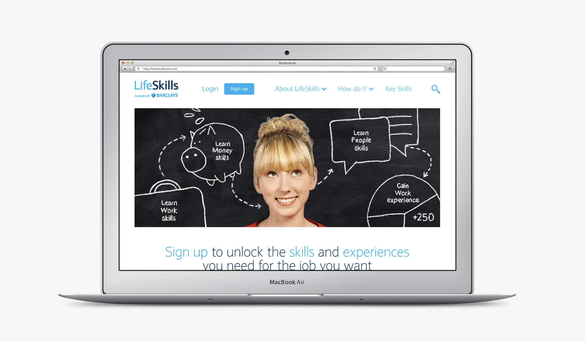
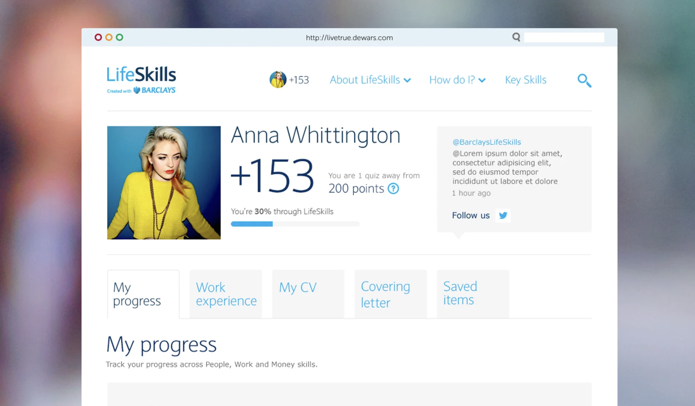
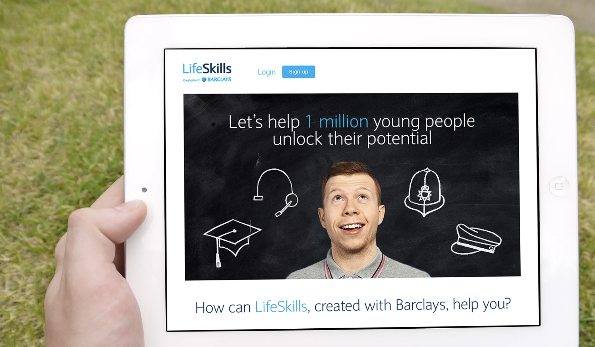
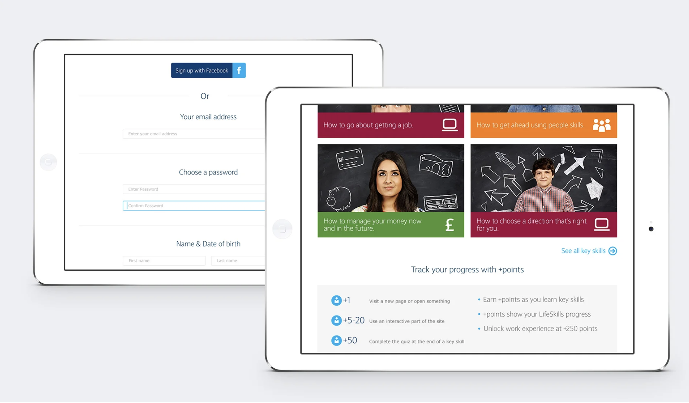
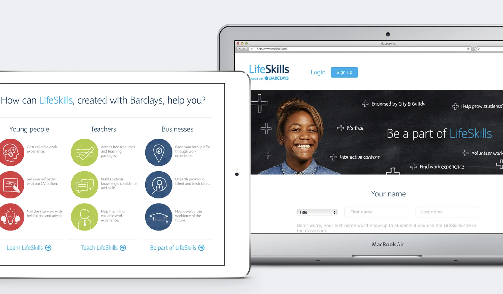

Barclays LifeSkills
LifeSkills, created with Barclays, helps young people get the skills and experiences they need to enter the world of work. I led the UI design for a phase two expansion of the platform — responsive across all breakpoints, in line with Barclays' brand tone of voice.

Helping young people into work — at scale.
LifeSkills is Barclays' flagship social impact platform, connecting young people with the skills, tools, and experiences they need to enter the workforce. Phase two of the project brought a significant UI refresh and the introduction of new sections: a public-facing content hub, a structured sign-up journey, and authenticated user profile pages — all needing to work seamlessly across desktop, tablet, and mobile.


Brand-faithful, user-first.
The visual design balanced Barclays' established brand system — clean, accessible, confident — with the warmer, more approachable tone needed for a young audience. Typography was set for legibility at every size. Colour usage followed the accessibility requirements of a financial brand, while remaining engaging enough to compete with the platforms young people already use.

Profile pages, sign-up flows, and full responsiveness.
The back-end user profile section was the most complex deliverable — a personalised dashboard letting users track progress, save resources, and manage their account. Every state was designed: empty, partial, complete, error. The sign-up form was built with progressive disclosure to reduce perceived complexity, and every component was handed over with responsive specs at three breakpoints.

"A digital platform that earns trust — by feeling as considered as the brand behind it."